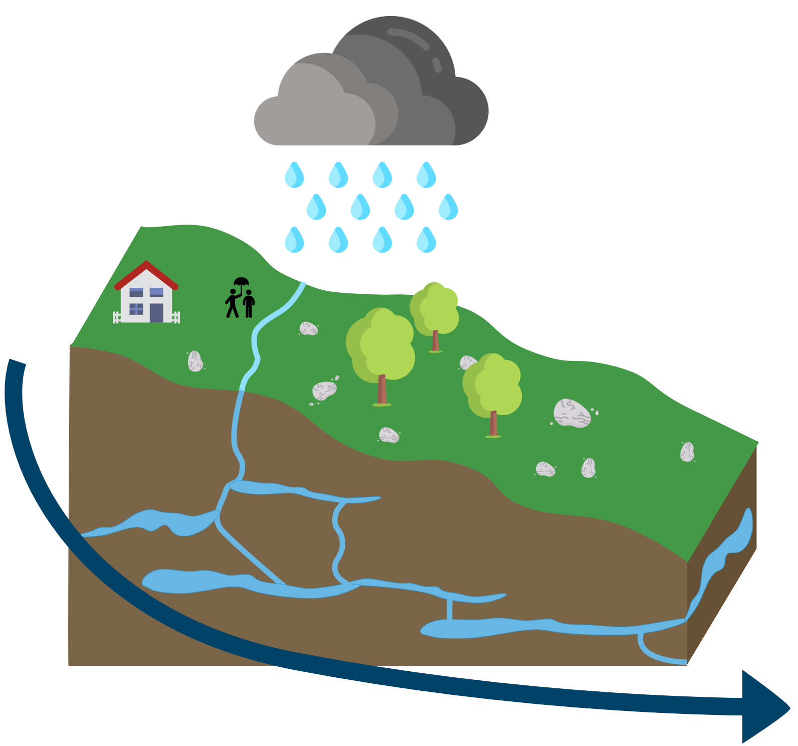
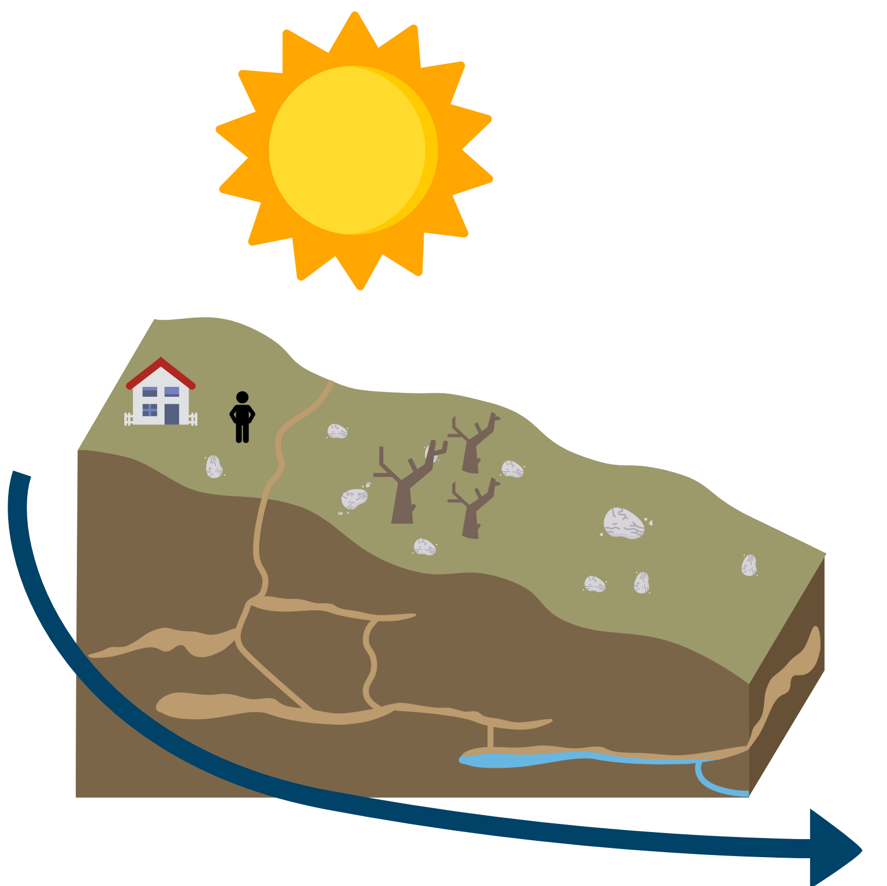
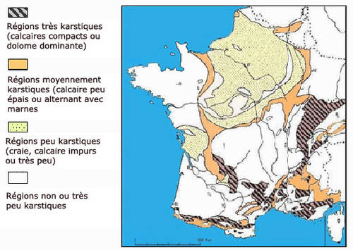

  <div class="row">
    <div class="col-lg-10 col-md-10 mx-auto">
      <h2>Une partie des reliefs calcaires apparaît en noir sur la carte : pourquoi ?</h2>
        <p>Ils apparaissent en noir sur la carte <a href="/">secheresses.fr</a> s'ils traversent une sécheresse anormalement intense sur plusieurs mois <strong>ET</strong> parce qu'une partie de ces reliefs a un sous-sol qui conserve mal l'eau en quantité suffisante. Dans les <a class="lien" href="/temoignages#carte">témoignages vous avez peut être été stupéfaits de découvrir un département où plus de 10% des communes étaient en pénurie d'eau potable suite à une sécheresse prolongée</a>. Ce qui s'est passé est assez logique: on vous montre ce qu'on a découvert?</p>
        <p>Sur toute une partie des montagnes à roches calcaires on observe de véritables tunnels creusés par l’eau dans la roche - un peu comme un gruyère. Lorsqu’il pleut l’eau s’échappe par ces tunnels et rejoint les vallées. Il y a donc peu de réserves d’eau souterraines. En dessin ça donne ceci:</p>
      <div class="row">
        <div class="col-lg-6 col-md-6 mx-auto">
          
        </div>
        <div class="col-lg-6 col-md-6 mx-auto">
          
        </div>
      </div>
        <p>L'eau s'écoule vers les vallées, à moins qu’il y ait un lac ou une roche imperméable qui empêche l’eau de s’écouler. Historiquement les reliefs calcaires sont des territoires qui ont toujours été sensibles aux sécheresses prolongées. Sauf qu’elles étaient exceptionnelles et qu’elles vont devenir la norme.</p>
        <p>Si vous résidez sur un tel territoire et que vous souhaitez en savoir plus sur l'impact des sécheresses à venir: nous vous proposons de découvrir de précieuses informations en utilisant le tutoriel ci dessous. <a class="lien" href="/">Et en cliquant ici vous retournerez sur la page d'accueil</a>.</p>
      <br>
        <h2>Tutoriel: les régions à relief calcaire & le risque de pénurie en eau potable</h2>
        <p><i class="fas fa-clock"></i> Il faut entre 2 et 3 heures pour réaliser ce tutoriel.</p>
        <p><strong>Sont nécessaires</strong>: un ordinateur, une connexion wifi. Vous pouvez le faire en groupe c'est d'autant plus intéressant.</p>
        <p>Le tutoriel est composé par une série de questions: vous devez y répondre pour passer à l'étape suivante. On vous met à disposition des ressources à chaque étape.</p>
        <p><a class="lien" href="#etape1">1/Suis-je dans une zone à relief calcaire compact?</a> > si la réponse est oui > <a class="lien" href="#etape2"> 2/Le calcaire est-il situé à la surface ?</a> > si la réponse est oui > <a class="lien" href="#etape3"> 3/Les sécheresses vont-elles être intenses et durer longtemps?</a> > si la réponse est oui > <a class="lien" href="#etape4">  4/Alors le territoire apparaît en noir sur la carte sécheresses.fr. 10% des communes risquent des pénuries en eau potable. En plus des sols très secs. </a></p>
        <p>A la fin du tutoriel vous découvrirez de <a class="lien" href="/zones-calcaires#FAQ">nombreuses ressources complémentaires</a> (par exemple: si votre commune est alimentée par la fonte des neiges, comment faire pour savoir à partir de quelle époque il n'y en aura plus) et des informations sur la manière dont <a class="lien" href="zones-calcaires#aider">vous pouvez nous aider à localiser les communes qui seront les prochaines concernées</a>. Merci de votre soutien.</p>

      <br/>

          <br>
          <h3 id="etape1">1/ Suis-je dans une zone à relief calcaire ?</h3>

          <!-- 1er critère -->
          <p>Sur la carte suivante, êtes-vous situé dans une zone hachurée en noir ? </p>
          <div class="col-lg-12 col-md-12 mx-auto">

          
          </div>
          <p>Si oui, vous êtes bien dans une zone à relief calcaire qui nous intéresse. Pour information: les scientifiques nomment ces zones "massifs karstiques". C'est important que vous le sachiez si vous faites des recherches sur vos territoires par la suite.</p>


          <br/>
          <h3 id="etape2">2/ Le calcaire est-il situé un calcaire de surface?  (= des calcaires où l'eau a tendance à s'écouler)</h3>

          <p>C'est principalement par le calcaire de surface que l'eau s'écoule vers les vallées ou jusqu'à une réserve d'eau souterraine.
          Pour savoir comment se caractérise le calcaire chez vous, c'est facile : </p>
        <ul>
          <li>Ouvrez le <a class="lien" href="https://bdlisa.eaufrance.fr/carte">le visualisateur de l'eau en France : BDLisa</a></li>
          <div class="col-lg-10 col-md-10 mx-auto">
              
            </div>
          </br>
          <li>Écrivez votre ville ou votre code postal, en haut à gauche, et cliquez sur la bonne ville dans la liste.</li>

          </br>


          <li>Cliquez sur “couches” en haut à droite.</li>
              <div class="col-lg-10 col-md-10 mx-auto">
              
              </div>
          </br>


          <li>Décochez la couche “entités hydrogéologiques affleurantes” (4ème case) et cochez la couche “Entités ou secteurs karstiques” (1ère case).  </li>
          <div class="col-lg-10 col-md-10 mx-auto">
            
          </div>
          <p> Si vous ne voyez pas votre commune, n'hésitez-pas à décocher/recocher la 1ère case "Entités ou secteurs karstiques" pour voir sous les étendues bleues.</p>

          
           </br>
          <li>Êtes-vous principalement sur une zone bleu clair (calcaire de surface) ou bleu foncé (calcaire en profondeur) ? </li>
          </ul>

          <p><strong> Bleu clair : </strong>
           <strong>C’est une zone particulièrement sensible aux sécheresses et où il n’y a sûrement pas de grandes réserves en eau souterraines. Nous vous invitons à passer au tutoriel 3. </strong></p>

          <p><strong>Bleu foncé : </strong>
            Bien que la zone soit très sensible aux sécheresses en surface, il y a peut-être/sûrement une vaste réserve d’eau potable souterraine en profondeur.</p>

        <p>Si vous êtes sur une zone où il n'y a ni bleu clair, ni bleu foncé, ce n'est pas une zone composée de roches calcaires compactes.</p>
    
         <h3 id="etape3">3/Les sécheresses vont-elles être intenses et durer longtemps ?</h3>
    
          <!-- 3er critère -->
    <div class="row">
      <div class="col-lg-8 col-md-8 mx-auto">
        </br>
        <p>Pour cette étape vous avez deux possibilités.</p>
        <p>Soit vous allez regarder sur la <a class="lien" href="/">carte secheresses.fr</a>. Si les points à proximité ne sont ni en rouge (situation de crise), ni en noir (risque de pénurie) = les <strong>années classiques</strong> ne présenteront pas de sécheresses anormalement intenses sur plusieurs mois selon les estimations climatiques.</p>
        <p>Soit vous apprenez à utiliser les données climatiques grâce au tutoriel ci dessous. Nous vous demanderons alors de répondre à la question suivante: <em>votre territoire présente t-il un indice SSWI en dessous de -1,4 (sols très secs à extrêmements secs) sur plus de 3 mois consécutifs?"</em></p>
        <br>
        <a  href="/anticiper-le-changement-climatique#sswi" class="btn btn-warning  btn-lg btn-block">Utiliser le tutoriel "anticiper les sécheresses"</a>
      </div>
      <p> </p>
    </div>
        </br>

    <h3 id="etape4">4/Alors le territoire apparaît en noir sur la carte sécheresses.fr</h3>
    <p>Si votre indice SSWI est en dessous de -1,4 (sols très secs à extrêmements secs) sur plus de 3 mois consécutifs <strong>ET</strong> que votre commune n'est pas alimentée par la fonte des neiges alors nous sommes dans la situation suivante:</p>
    <p><em>Risques de pénuries en eau (dont potable): plus de 10% des communes du territoire risquent des ruptures de l'alimentation eau potable durant plusieurs semaines/mois. En plus de sols extrêmement secs. <a class="lien" href="/legende">En savoir plus sur cette légende!</a></em></p>
    <p>Les données correspondant à l'étape 4 sont présentées en noir sur la carte.</p>
    <p>Les communes les plus à risque sont celles dont l'alimentation en eau potable dépend de sources à "petits reservoirs". Puis celles dont l'alimentation dépend d'une rivière en altitude.</p>
    <p>Consultez les ressources ci dessous en attendant une amélioration de ce tutoriel ou <a class="lien" href="/zones-calcaires#aider">découvrez comment vous pouvez aider</a>!</p>

    <hr>
    <h3 id="FAQ">Pépites complémentaires: en attendant une amélioration de ce tutoriel!</h3>
        <br>
        <h3>Comment découvrir si une commune actuellement alimentée au printemps par la fonte des neiges le sera toujours?</h3>
        <p>Si votre commune est établie sur un relief calcaire des Alpes ou des Pyrénées nous vous proposons de visualiser les changements à venir sur le manteau neigeux. Nous allons faire apparaître pour différentes époques la neige restante sur votre massif à la fin du mois d'avril, et ceci jusqu'en 2080-90. On va même faire mieux: on va faire apparaître le volume d'eau que cela représente si la neige fond. Comme ça vous aurez une idée de ce que la fonte des neiges peut apporter comme volume d'eau à partir du mois de mai. Cela semble un peu fou mais nous allons quand même le faire. Pour cela:
                <ul>
                    <li>Renseignez vous sur l'altitude de votre commune et l'altitude du point le plus haut du massif qui vous alimente en eau.
                    <li><a class="lien" href="http://drias-climat.fr/decouverte/cartezoomadamont/ALPES/1800/experience/ADAMONT2017_ELAB/ALADIN53_CNRM-CM5/RCP8.5/H1/NORSWE/M4#">Cliquez ici pour ouvrir le visualisateur</a>.
                    <li>Dans "Repères géographiques" cliquez sur "Fond de carte détaillé" avant toute chose.</li>
                    <li>Dans "Mois" sélectionnez le mois d'avril. Ils vous renseignera sur la neige qu'il reste au mois d'avril et qui peut fondre sous forme d'eau.</li>
                    <li>Dans "Autre paramètre" sélectionnez "Maximum d’équivalent en eau du manteau neigeux". Cela vous permettra de savoir combien de mm équivalent en eau il restera sur votre massif.</li>
                    <li>Sélectionnez maintenant la zone qui vous intéresse et la période (horizon proche, moyen ou lointain).</li>
                    <li>Survolez la carte. Vous verrez apparaître sur votre massif la quantité d'eau (en mm par superficie) restante au mois d'avril, à différentes époques. Entre l'altitude de votre commune et l'altitude du point le plus haut du massif qui vous alimente en eau - combien y a t-il de mm équivalent eau en tout? A partir de quand la neige a t-elle disparue?</li>
                </ul>

        
        <br>
        <h3>Comment peut-on découvrir d'où provient l'eau potable d'une commune?</h3>
            <p><strong>Première étape</strong>: il vous faut accéder à <a class="lien" href="https://bnpe.eaufrance.fr/acces-donnees">https://bnpe.eaufrance.fr/acces-donnees</a>. Entrez le nom de votre commune. Consultez les résultats.  Sélectionnez AEP ce qui signifie Alimentation en Eau Potable. Les résultats devraient apparaître. Souterrain = captages souterrains. Surface = captages de surface (par exemple dans une rivière ou un lac).</p>
            <p><strong>Deuxième étape</strong>: nous avons créé <a class="lien" href="https://umap.openstreetmap.fr/fr/map/captage-des-eaux-sous-terraines_260518">une carte présentant la géolocalisation exacte de tous les forages et sources servant l'alimentation en eau potable</a>. Entrez le nom de votre commune grâce à l'outil de recherche à gauche de l'écran. Les points en bleu clair représentent les sources qui servent d'alimentation en eau potable. Les points noirs les forages qui servent d'alimentation en eau potable (captage d'eaux souterraines). Cette carte peut vous être très utile si vous habitez à flanc de relief elle vous sera bien moins utile si vous habitez à côté d'une rivière alimentée par de nombreux autres points d'eau. Nous l'avons en réalité conçue pour localiser les 30% de sources qui risquent de tarrir (source: Agence de l'Eau) dans les <a class="lien" href="/zones-calcaires">reliefs calcaires</a> - et tout particulièrement celles qui servent d'unique source d'alimentation en eau potable pour des communes.</p>
        
        <br>
        <h3>Comment peut-on suivre les niveaux d'eau des rivières en relief calcaire?</h3>
        <ul>
                <li><a class="lien" href="https://umap.openstreetmap.fr/fr/map/captage-des-eaux-sous-terraines_260518">Sur la carte que nous avons conçue</a> repérez les points en bleu foncé. Ils vous permettent de suivre, à l’heure près, les mesures des eaux souterraines. Cliquez dessus. Si une "chronique piezométrique" apparaît sélectionnez "profondeur". Cela vous renseigne sur le nombre de mètres entre la surface et la réserve d'eau souterraine.</li>
                <li><a class="lien" href="https://www.rdbrmc.com/hydroreel2/index.php">Sur Hydroréel</a> vous aurez la possibilité d’observer les variations de débits des sources / cours d’eau sur votre commune pour les années passées.</li>
                <li><a class="lien" href="https://onde.eaufrance.fr/acces-aux-donnees">Sur EauFrance</a> vous aurez la possibilité d’observer les variations des cours d’eau à proximité de votre commune.</li>
            </ul>
        <br>
        <h3>Et aussi!</h3>
            <p>Les acteurs de l’eau ont produit de nombreuses cartes qui listent les ressources en eau majeures présentes et à venir. <a class="lien" href="http://www.rhone-mediterranee.eaufrance.fr/docs/ressources+/etudes/jura/plaquette_karst_2013_VF.pdf">Exemple avec la carte des réserves en eau majeures présentes et à venir du massif du Jura</a>. Demandez un rendez-vous aux gestionnaires de l’eau de votre région et allez-y à plusieurs pour leur poser des questions.</p>
            <br>
        <h2 id="aider">Envie d'aider?</h2>

        <p>Nous sommes entrain d'essayer de localiser les communes des reliefs calcaires dont l'alimentation en eau potable dépend uniquement de sources qui risquent de tarrir. Cette démarche est réalisée de manière bénévole et citoyenne.</p>

        <br>
        <a  href="/aidez-nous" class="btn btn-warning  btn-lg btn-block">Envie de faire ce tutoriel avec quelqu'un? D'améliorer la méthode? Venez aux rencontres!<a>
        <br>
      </div></p>
</ul
</br>

    </div>
      </div>
